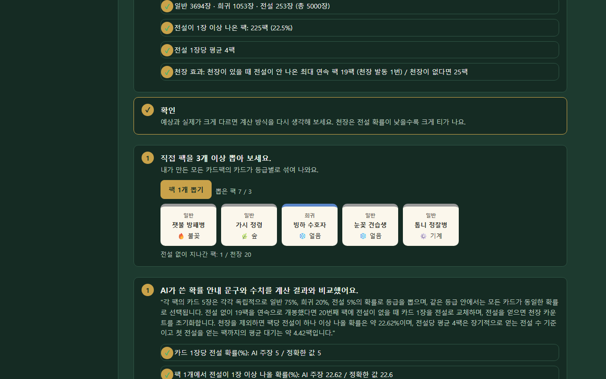

카드팩 스튜디오 (속성 카드 대전 + 카드뽑기) 자동 테스트 결과
실행: 2026-11-02 03:04 · 도구: Playwright(Chromium) · 대상: 스토리게임만들기/card-studio/studio.html · 리포트 생성: 2026-11-02
47 / 55자동화한 TC / 전체 TC
47테스트 수 (TC 여러 개를 묶은 것 포함)
46통과
1실패
33초전체 실행 시간
TC 출처: 기획서 없음 — 화면 안내 문구와 코드 규칙(cardRules.js·battle.js·gacha.js 주석)을 근거로 Claude Code가 TC 작성 규칙(044)에 맞춰 쓴 초안
실패 상세
[CS-46] 새로고침 후 천장 카운트 유지
Error: 새로고침 전 3팩에 이어서 4가 되어야 함 (천장 카운트 저장 여부는 기획 확인 필요)
expect(locator).toHaveText(expected) failed
Locator: locator('.note').filter({ hasText: '전설 없이 지나간 팩:' })
Expected: "전설 없이 지나간 팩: 4 / 천장 20"
Received: "전설 없이 지나간 팩: 1 / 천장 20"
Timeout: 8000ms
자동화한 TC (47건)
검토 칸: review 칸은 LKM이 '확인함' 또는 '버림'으로 바꾼다. AI가 쓴 TC는 처음에 모두 '초안'.
| TC | 내용 | 근거 | 결과 | 시간 | 검토 |
|---|---|---|---|---|---|
| CS-01 | 첫 화면 구성 | studio.html·core.js render | 통과 | 0.5초 | 초안 |
| CS-02 | 앞 단계를 마치기 전 다음 단계·추가 미션 잠김 | core.js accessible | 통과 | 0.5초 | 초안 |
| CS-03 | 진행 파일 불러오기 | core.js loadFile | 통과 | 0.5초 | 초안 |
| CS-04 | 다른 형식의 파일 불러오기 거부 | core.js loadFile | 통과 | 0.4초 | 초안 |
| CS-05 | 진행 파일 저장 | flow2.js 진행 파일 저장 단계 | 통과 | 1.0초 | 초안 |
| CS-06 | 새로고침 후 입력 유지 | core.js persist·restore | 통과 | 0.6초 | 초안 |
| CS-07 | 1단계 통과 조건 | s1.js 1단계 확인 목록 | 통과 | 0.5초 | 초안 |
| CS-08 | 카드팩 이름 1글자/2글자 경계 | s1.js (2글자 이상) | 통과 | 0.4초 | 초안 |
| CS-09 | 카드팩 이름 20자 제한 | s1.js maxlength 20 | 통과 | 0.4초 | 초안 |
| CS-10 | 설명이 섞인 AI 답변에서 카드 8장 읽기 | cardRules.js extractJson | 통과 | 0.6초 | 초안 |
| CS-11 | 카드 7장 답변 거부 | cardRules.js normalizeCards | 통과 | 0.5초 | 초안 |
| CS-12 | 중간에 잘린 답변 안내 | cardRules.js extractJson | 통과 | 0.5초 | 초안 |
| CS-13 | 빈 답변 안내 | cardRules.js extractJson | 통과 | 0.4초 | 초안 |
| CS-14 | 영어 유형·등급 이름을 한글로 정리 | cardRules.js TYPE_ALIAS·RARITY_ALIAS | 통과 | 0.5초 | 초안 |
| CS-15 | 카드 수치 범위 경계 | cardRules.js normalizeCards (코스트 1~9, 공격·방어 0~40) | 통과 | 0.3초 | 초안 |
| CS-16 | 공격+방어 합 ±2 경계 | 3단계 안내 ① | 통과 | 0.3초 | 초안 |
| CS-17 | 등급별 코스트 상한 경계 | 3단계 안내 ③ | 통과 | 0.3초 | 초안 |
| CS-18 | 유형 규칙 (공격형·방어형·균형형) | 3단계 안내 ② | 통과 | 0.3초 | 초안 |
| CS-19 | 능력 카드 규칙 | core.js ruleLines 1·4 | 통과 | 0.3초 | 초안 |
| CS-20 | 밸런스 위반 표시 → 수정 답변 반영 → 통과 | s1.js 3단계 | 통과 | 0.6초 | 초안 |
| CS-21 | 수정 답변에서 카드 id가 바뀌면 거부 | core.js applyCardFix | 통과 | 0.5초 | 초안 |
| CS-22 | 강사 확인 후 넘어가기 | core.js nextBar override | 통과 | 0.5초 | 초안 |
| CS-23 | 설명문 규칙 (30자·숫자·반대 느낌) | 4단계 안내 | 통과 | 0.3초 | 초안 |
| CS-24 | 말투 규칙 (어린이용 ~요, 진지한 ~다) | 추가 미션 B 안내 | 통과 | 0.3초 | 초안 |
| CS-25 | 그림 3장/4장 경계 | s1.js 5단계 (최소 4장) | 통과 | 1.0초 | 초안 |
| CS-26 | 이미지가 아닌 파일 거부 | core.js attachDrop | 통과 | 0.5초 | 초안 |
| CS-27 | 첫 카드팩 등록 후 두 번째 카드팩 안내 | s1.js 6단계 (서로 다른 속성 2개) | 통과 | 0.4초 | 초안 |
| CS-28 | 대전 시작 상태 | battle.js 규칙 주석 (영웅 체력 30, 시작 3장 + 매 턴 1장) | 통과 | 0.7초 | 초안 |
| CS-29 | 마나가 부족한 카드 클릭 | battle-ui.js 손패 | 통과 | 0.8초 | 초안 |
| CS-30 | 카드 내기 | battle.js playCard | 통과 | 0.8초 | 초안 |
| CS-31 | 상성 우위 공격 ×1.5, 반격은 상성 없음 | battle.js 규칙 주석·1단계 안내 | 통과 | 0.3초 | 초안 |
| CS-32 | 맞은편이 비면 영웅 공격 (상성 없음) | battle.js 규칙 주석 | 통과 | 0.3초 | 초안 |
| CS-33 | 관통: 카드를 쓰러뜨리고 남은 피해는 영웅에게 | battle.js 능력 주석 | 통과 | 0.3초 | 초안 |
| CS-34 | 보호막: 첫 피해 1번만 0 | battle.js 능력 주석 | 통과 | 0.3초 | 초안 |
| CS-35 | 선공: 낸 턴에 바로 공격 | battle.js 능력 주석 | 통과 | 0.3초 | 초안 |
| CS-36 | 게임 종료 판정 (30턴 제한) | battle.js MAX_TURNS 30 | 통과 | 0.3초 | 초안 |
| CS-37 | 카드를 낼 수 없을 때 안내 문구 | battle.js playCard | 통과 | 0.3초 | 초안 |
| CS-38 | 턴 종료 → 컴퓨터 차례 → 내 2턴 | battle-ui.js 턴 종료 | 통과 | 2.6초 | 초안 |
| CS-39 | 같은 시드 시뮬레이션은 같은 결과 | battle.js 재현 가능한 난수 | 통과 | 0.3초 | 초안 |
| CS-40 | 100판 시뮬레이션 합계 | battle.js simulate | 통과 | 0.3초 | 초안 |
| CS-41 | 카드뽑기 설계 검증 경계 | gacha.js validateDesign·흐름 안내 문구 | 통과 | 0.3초 | 초안 |
| CS-42 | 확률 공시 수치 검수 | gacha.js audit (계산값) | 통과 | 0.3초 | 초안 |
| CS-43 | 천장 보장 | gacha.js 천장 주석 | 통과 | 0.3초 | 초안 |
| CS-44 | 전설 확률 분포 | gacha.js rollRarity | 통과 | 0.3초 | 초안 |
| CS-45 | 팩 1개 뽑기 화면 | flow2.js 직접 뽑기 | 통과 | 0.9초 | 초안 |
| CS-46 | 새로고침 후 천장 카운트 유지 | flow2.js 직접 뽑기 + 공시 문구(천장 20팩) | 실패 | 9.7초 | 초안 |
| CS-47 | 기본 단계를 마치면 추가 미션 열림 | core.js accessible | 통과 | 0.6초 | 초안 |
자동화하지 않은 TC와 이유
| TC | 이유 |
|---|---|
| CS-M1 | 외부 AI 서비스 사용(크레딧) — 무료 원칙으로 제외, 붙여넣기 처리는 CS-10~14로 자동화 |
| CS-M2 | 외부 그림 생성 서비스 + 눈으로 판단 |
| CS-M3 | 클립보드 권한이 브라우저 설정마다 다르고 붙여넣을 외부 창 필요 |
| CS-M4 | 눈으로 판단 |
| CS-M5 | 운영체제 탐색기에서 끌어오는 동작은 자동화 도구로 재현이 어려움 (클릭으로 넣기는 CS-25) |
| CS-M6 | 실제 기기 필요 |
| CS-M7 | 눈으로 판단 |
| CS-M8 | 사람이 실제로 해 보며 판단 (학생 눈높이) |